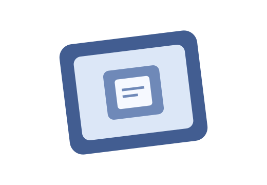
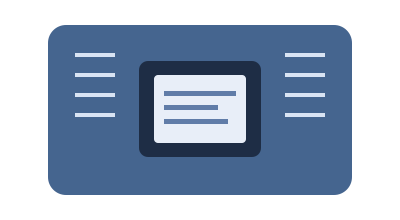

Projet Arduino
Ajoute une description de ton montage, de son objectif et de tes apprentissages.
ArduinoÉlectronique
Je suis étudiante en technologie électrique et je découvre l’électronique, les systèmes embarqués, la robotique et le machine learning. Ce site rassemble mes apprentissages et mes réalisations.

Un mélange de matériel, de programmation et de créativité.
Comprendre les circuits, les composants, les mesures et la conception électronique.
Expérimenter avec Arduino, les microcontrôleurs PIC et les interactions matériel-logiciel.
Découvrir comment les données et les algorithmes peuvent résoudre des problèmes.
Des exemples à remplacer par tes propres réalisations.
Ajoute une description de ton montage, de son objectif et de tes apprentissages.

Présente un circuit basé sur PIC, ses composants et sa programmation.
Montre un robot ou une expérience d’automatisation et son résultat.